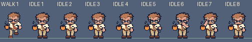
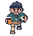
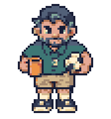
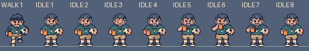
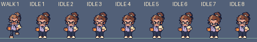
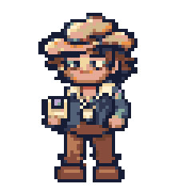
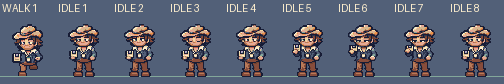

Hero idle scale studies
Eight frames per hero, 56×60 cells. Walk frame 1 sets each figure’s height, width and sole line. Art review only; nothing placed in the game.
Bounds and palette checks · Painting directions · Notes
Left: current walk frame 1. Right: new idle at the same exact 4× display scale. The walk pose has a raised foot; the idle keeps both feet planted. The sole line stays y56.
9-to-5er: glasses push
36 px wide × 53 px tall; sole y56. Only colors from this hero’s current walk sheet.
Current walk frame 1New idle loop, exact 4×
Native 448×60 sheet · All eight beside walk frame 1 at 4×

Native 1× comparison; horizontal scroll on narrow screens. Sage line marks shoe contact.Soccer Dad: coffee sip
38 px wide × 55 px tall; sole y56. Only colors from this hero’s current walk sheet.

Current walk frame 1
New idle loop, exact 4×Native 448×60 sheet · All eight beside walk frame 1 at 4×

Native 1× comparison; horizontal scroll on narrow screens. Sage line marks shoe contact.Grad Student: notebook check
30 px wide × 53 px tall; sole y56. Only colors from this hero’s current walk sheet.
Current walk frame 1New idle loop, exact 4×
Native 448×60 sheet · All eight beside walk frame 1 at 4×

Native 1× comparison; horizontal scroll on narrow screens. Sage line marks shoe contact.Coldwar Cowboy: floppy disk check
31 px wide × 53 px tall; sole y56. Only colors from this hero’s current walk sheet.
Current walk frame 1
New idle loop, exact 4× Native 448×60 sheet · All eight beside walk frame 1 at 4×

Native 1× comparison; horizontal scroll on narrow screens. Sage line marks shoe contact.